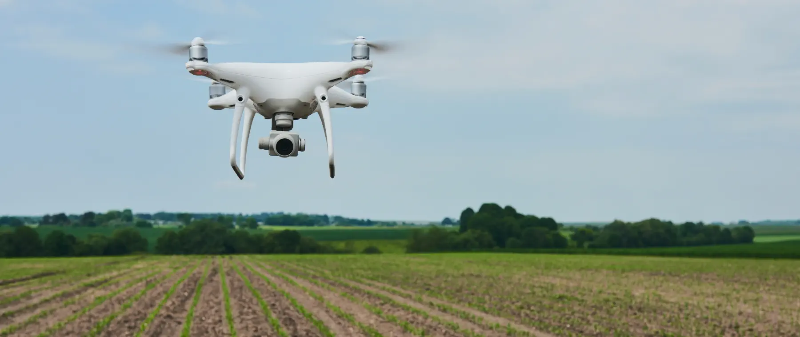

проект по внедрению цифровой платформы (системы класса MES)
«Русагро Тех» и АО «Жировой Комбинат» завершили первый этап проекта доработки и внедрения цифровой платформы (системы класса MES) при поддержке РФРИТ. В качестве пилотных площадок выбраны элеватор и маслоэкстракционный завод «Русагро-Балаково», а также жировой комбинат «Русагро-Саратов».
В рамках проекта российское программное обеспечение дорабатывается с учётом потребностей бизнеса и внедряется. Это позволяет оптимизировать управление предприятием, снизить риск сбоев и остановок производства. ООО «Русагро-Балаково» является одним из трёх лидеров российской масложировой индустрии. На его территории находится крупнейший в Поволжье элеватор и речной терминал, позволяющий отгружать готовую продукцию водным транспортом. Завод способен перерабатывать 1800 тонн семян масличных культур в день. А ООО «Русагро-Саратов» — быстро развивающееся предприятие Саратовской области, которое способно ежегодно производить 450 тысяч тонн промышленных жиров и 41 тысячу тонн майонеза.Создание единой цифровой среды сквозного автоматизированного учёта повысит эффективность управления производствами, сократит время простоя и остановки оборудования.
Проект «Управление элеватором, маслоэкстракционным заводом и жировым комбинатом АО “Жировой комбинат”» входит в Перечень особо значимых и включен в дорожную карту «Новое индустриальное программное обеспечение». Проект реализуется при грантовой поддержке Российского фонда развития информационных технологий (входит в группу ВЭБ.РФ) в рамках нацпроекта «Цифровая экономика». Сумма гранта составила 200 млн рублей, общая стоимость проекта – 250 млн рублей.в ходе первого этапа проекта были проведены исследования производственных объектов, описаны процедуры контроля качества и интеграция с лабораторным оборудованием элеватора и маслоэкстракционного завода. Также подробно изучены бизнес-процессы маслосливного комплекса, гидрорафинационного, майонезного и маргаринового цехов, планирование, учёт и управление производственными потоками, учёт энергоресурсов, управление приёмом и хранением сырья, а также управление маслосливным комплексом.Дальнейшие работы будут направлены на разработку и согласование проектной документации, доработку и тестирование программных модулей. Проект, начатый в марте, планируется завершить в течение трёх лет. Контроль реализации проекта осуществляют эксперты «Русагро Тех».
«Внедрение MES-системы обеспечит прозрачность и оперативность получения информации о состоянии производства, что даст возможность оперативно реагировать на изменения и принимать обоснованные управленческие решения», – прокомментировал бизнес-партнер масложирового бизнес-направления «Русагро Тех» Александр Боголепов. «Проект по разработке MES-системы имеет большое значение для нашей компании, поскольку он не только улучшает управление производственными процессами и повышает конкурентоспособность, но и может стать отраслевым решением, применимым в других организациях агропромышленного комплекса. Благодаря поддержке РФРИТ мы уверены в успешном завершении проекта и активном внедрении инноваций в масложировую отрасль компании «Русагро», – рассказал генеральный директор ООО «Русагро Тех» Максим Равба.
Благодаря поддержке РФРИТ мы уверены в успешном завершении проекта и активном внедрении инноваций в масложировую отрасль компании «Русагро», – рассказал генеральный директор ООО «Русагро Тех» Максим Равба.
 1.11.2023
1.11.2023 1.11.2023
1.11.2023 1.11.2023
1.11.2023 1.11.2023
1.11.2023